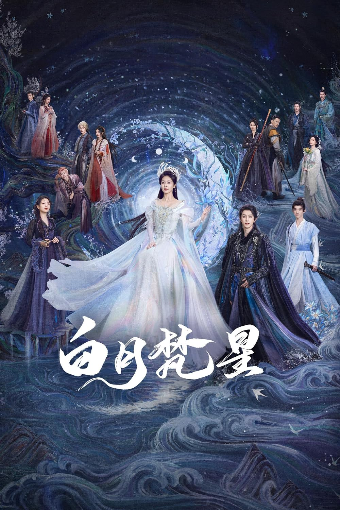
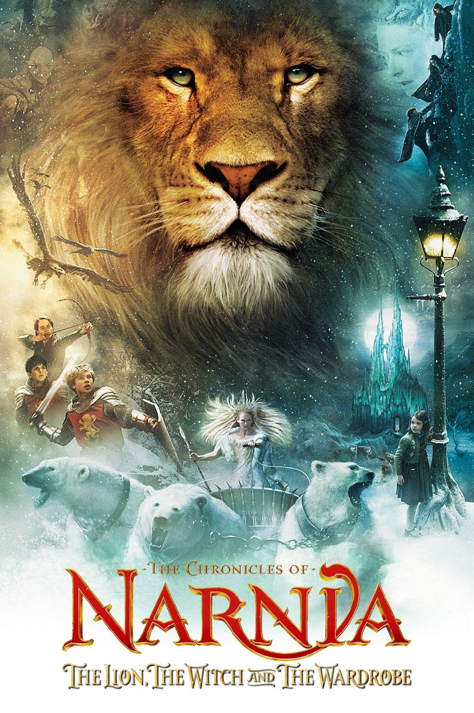

Biodata Film
| Tahun | Judul | Episode | Rating |
|---|---|---|---|
| 2026 | Hidden Love | 24 | 95 |
| 2025 | Moonlight Mystique | 40 | 98 |
| 2024 | Moana 2 | 1 | 98 |
| 2005 | The Chronicles of Narnia: The Lion, the Witch and the Wardrobe | 1 | 98 |
Review Film
Beranda

Moonlight Mystique
Moonlight Mystique (Hanzi: 白月梵星; Pinyin: Bái Yuè Fàn Xīng) adalah seri televisi Tiongkok tahun 2025 yang diadaptasi dari novel Bái Shuò Shàng Shén (白烁上神) karya Xing Ling. Seri televisi ini dibintangi oleh Bai Lu, Ao Ruipeng, Dai Luwa, dan Chang Huasen sebagai pemeran utama. Seri ini ditayangkan perdana di iQIYI pada 7 Januari 2025.

Sang Singa, Sang Penyihir dan Lemari
Sang Singa, Sang Penyihir dan Lemari (bahasa Inggris: The Lion, the Witch and the Wardrobe) adalah novel fantasi karya C. S. Lewis. Buku ini ditulis pada tahun 1950 dan mempunyai nuansa sekitar tahun 1940. Buku ini adalah yang pertama kali ditulis dari ketujuh seri "The Chronicles of Narnia". Meskipun buku ini adalah yang pertama kali ditulis, tetapi secara kronologi buku ini adalah buku yang kedua setelah "Keponakan Penyihir".